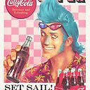

Franky Cola
COLAAAA! Cola is a know drink used to power Franky from One piece.
Without the power of Cola, Franky gets physically drained and can't move.
Like they say, Coca Cola is Coke(and it surley is). Coca-Cola, or Coke, is a carbonated soft drink
manufactured by the Coca-Cola Company.
Ingredients

Merchandise 7x Flavour
- high proof food grade alcohol(8oz)
- Orange oil(1mL)
- Lemon oil(1.5mL)
- Nutmeg,Neroli,Cinnamon oil(0.5mL)
- Coriander oil(0.25mL)
Sugar Syrup Recipie
- FE Coca (Fluid Extract of Coca) 3 drams USP (10.5 mL)
- Citric Acid 3 oz (85g)
- Caffeine 1 oz (30 mL)
- Sugar 30 #
- Water 2.5 gal
- Lime Juice 2 pints (473 mL)
- Lemon
- Vanilla 1 oz (30 mL)
- Caramel 1.5 oz or more to colour
Rest
- Water 1.18L
- Sugar 1.7 Kg
- Caramel 5.5 mL
- FE Coca 1.3 mL (not used)
- Vanilla 3.75 mL
- Caffeine 3.75 mL
- Lime Juice 59.12 mL
- Citric Acid 10.6g
Steps
Credit
- Mix together all of the ingredients of the 7X Flavour.
- Set this aside in a sealed bottle.
- Heat the water sugar and caramel in a large pot.
- Stirring continuously, just until sugar is dissolved.
- Take off the heat and mix in vanilla, caffeine, lime juice and citric acid.
- Stir to fully combine.
- Add a measured amount of 7X flavouring to the sugar syrup.
- Mix with carbonated water at a ratio of one part syrup and 5 parts water.